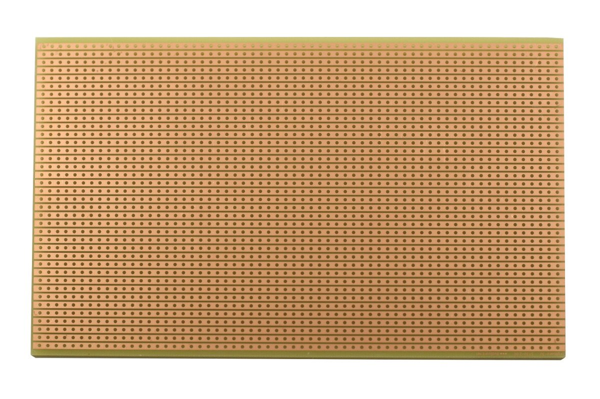
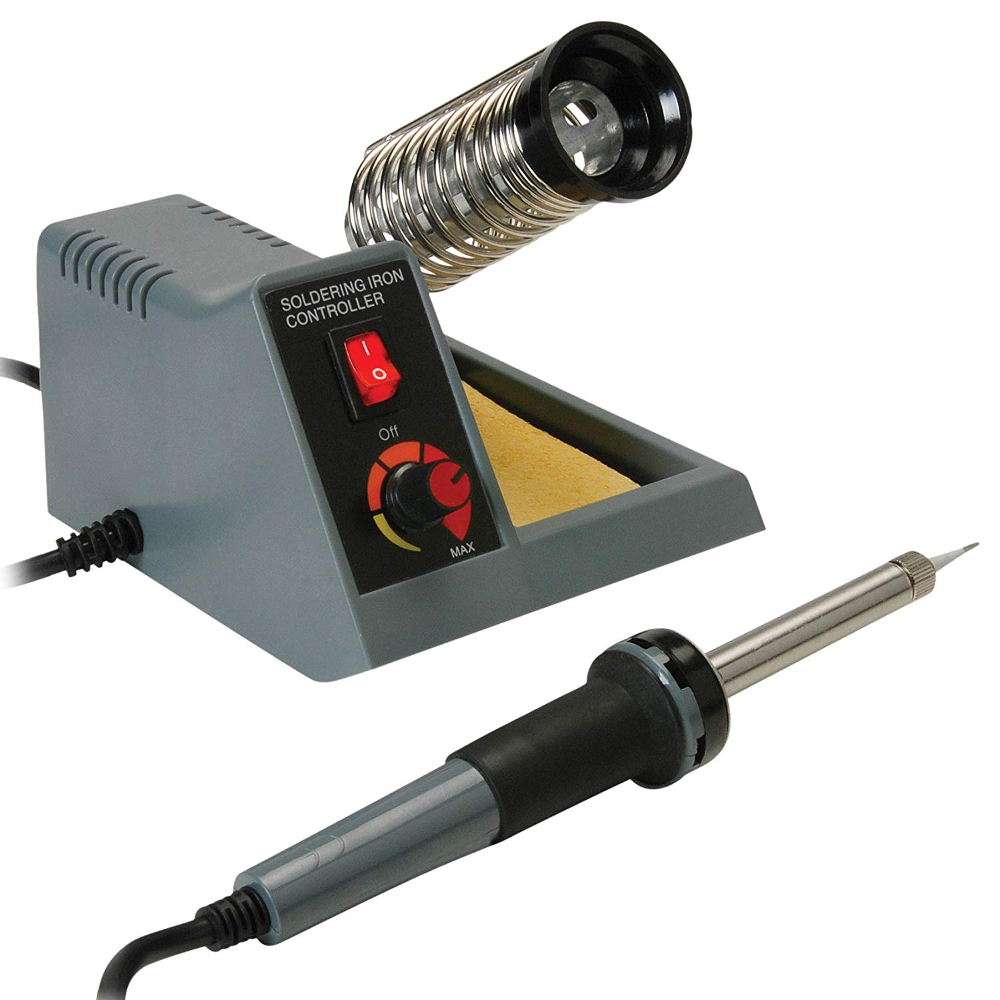

CA2 Project:
I felt that my soldering skills are still some ways off from good, and I need more practice in order to make sure I do not make anymore errors regarding soldering
my stripboard. I also felt that more ideas could be placed in like a switch to help turn the system on and off should the train operator/car driver wish to take over
manually or proceed faster on their own disgression. Maybe in the near future, I feel that a system like this could be useful for the safety of passengers on automated
vehicles as we grow closer to having cars that could drive on their own and MRTs without the need for an operator using a Smart Tech system. If I had more time to focus
on this project, done more preparation such as being prepared for the soldering process better and didn't fell ill so soon, I knew I could have done a much better job
at this project by implementing more sophisticated system to further enhance its usability.

I hope to further improve my soldering skills in the near future by asking my EEE friends over the holidays to do some mini projects of our own in order to sharpen
the skills for future major projects.
